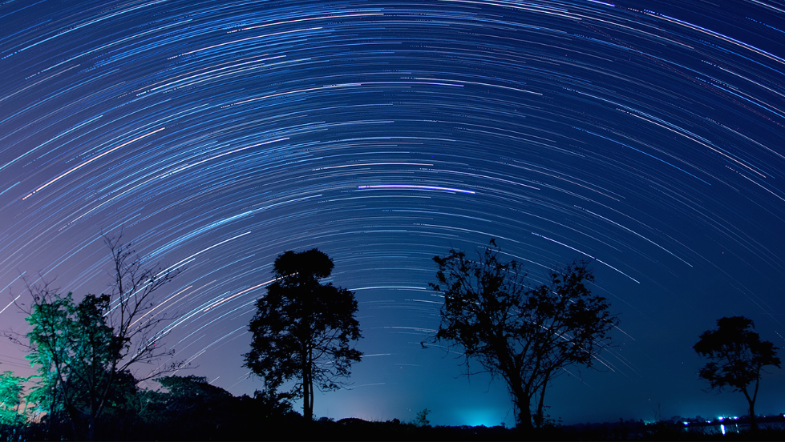
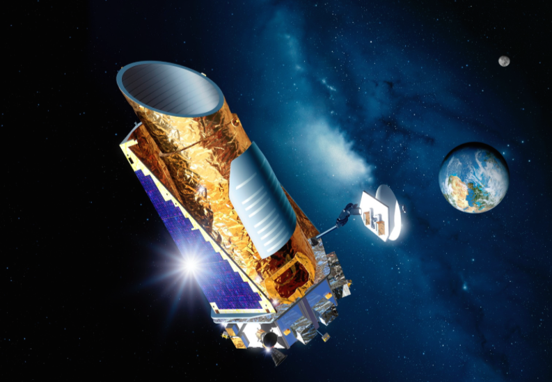

Star Gazing
If feels like every time astronomers even look at a star these days, they find a planet or two in orbit around it. They’ve confirmed about 3500 planets in all with thousands more awaiting confirmation. The planets range from about the mass of the Moon to many times the mass of Jupiter, the largest planet in the solar system. Some are quite close to their parent stars, while others are far away. And some orbit a single star, while other have two suns in their sky -- or even three.
Exoplanets
One amazing thing about these discoveries is that, in an era of giant telescopes, most of the exoplanets were found with small telescopes. Most of the planets were discovered with the Kepler Telescope.
Kepler Telescope
This spacecraft looks for a small dip in a star’s light caused by a planet passing across its disk. And it does so with a main mirror that measures just three feet across -- quite small by modern research standards. Many ground-based planet searches are done with even smaller telescopes, which devote all their time to hunting planets. A robotic network known as HAT, for example, has discovered almost 60 planets with telescope that consist of 200-millimeter camera lenses. And a telescope known as KELT-North, which uses an 80-millimeter lens, has discovered four confirmed planets.
These little telescopes are helping make some big discoveries about worlds in other star systems.
Script by Damond Benningfield, Expoplanets and Expoplanets II, September 11-12, 2016, courtesy of StarDate